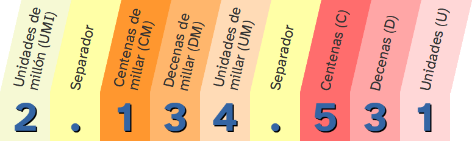
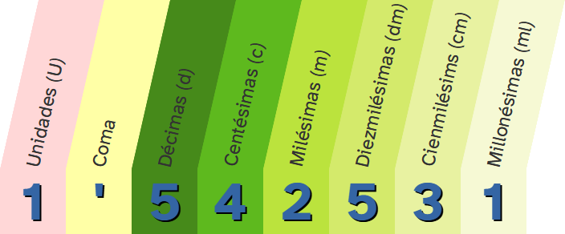
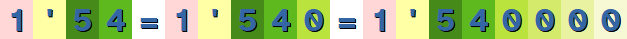

Diccionario
Báscula
Definición:
Aparato que sirve para medir pesos.
Ejemplo:
Utiliza la báscula para añadir los ingredientes a la empanada.
Definición:
Aparato que sirve para medir pesos.
Ejemplo:
Utiliza la báscula para añadir los ingredientes a la empanada.

Vamos a calcular precios, cantidades en kilogramos y litros, la energía que contienen los alimentos en kilocalorías. Para todo ello necesitaremos utilizar números decimales.
Tengo claro que conoces de sobra los números decimales pero en este apartado vamos a recordar todo lo necesario para para poder reconocerlos y ordenarlos.
Introduce cantidades en la siguiente construcción (el símbolo para separar los céntimos debe ser un punto) y observa las monedas y billetes necesarios para conseguirlas:
Además de para contar dinero o indicar un precio, al llevar a cabo nuestro proyecto solidario tendremos que utilizar los números decimales en el calculo de masas (kg) y capacidades (l) de los diferentes alimentos y nutrientes.
Será por tanto fundamental que entendamos bien cómo funcionan estos números y cómo realizar operaciones con ellos.
En la parte entera encontramos:
Donde:
10 U = 1 D
100 U = 10 D = 1 C
1.000 U = 100 D = 10 C = 1 UM
10.000 U = 1.000 D = 100 C = 10 UM = 1 DM
100.000 U = 10.000 D = 1.000 C = 100 UM = 10 DM = 1 CM
1.000.000 U = 100.000 D = 10.000 C = 1.000 UM = 100 CM = 1 UMI
Recuerda que el separador no aporta información, solo facilita la lectura del número.
No debemos confundir el punto de separación de millares con el símbolo de decimales.
OJO: Algunas calculadoras utilizan comas como separador de miles, y los ingleses utilizan un punto, en lugar de una coma, para separar la parte decimal de la parte entera.
Al igual que las cifras a la derecha de la coma, las que están a la izquierda también tienen un valor y un nombre en función de la posición que ocupan
Un número decimal se compone de dos partes separadas por una coma:


Una unidad se divide en 10 décimas que a su vez se divide en 10 centésimas que a su vez se divide en 10 milésimas y así sucesivamente.
Por lo tanto tendremos:
|
1 U = 10 d |
1 d = 0'1 U = 1/10 U |
Si añadimos ceros a la derecha de un número decimal no aportan información y pueden ser eliminados.

Por lo tanto:
Para ordenar dos números decimales:
Ejemplo: He comprobado el precio del kilogramo de mandarinas en dos supermercados, en MercaRoma costaba 1'54 € y en CarreNine 1'55 € ¿Dónde está más barato?

Después de comparar ambos números decimales comprobamos que en MercaRoma es más barato, en concreto 0'01 € (un céntimo) más.
Los números decimales se representan en la recta numérica.
Una vez que tenemos representados en la recta numérica los números naturales:
|
\pmb{\mathbb N} |
...y los números enteros:
|
\pmb{\mathbb Z} |
|
... es el momento de representar un número decimal.
Para ello, tenemos que ubicarlo entre los dos números enteros donde está comprendido.
Se divide el segmento que une estos dos números enteros (menor y mayor entero que el número decimal) en 10 partes iguales para las décimas, 100 partes iguales para las centésimas,...y así sucesivamente, hasta llegar al número decimal.
En la práctica, procederíamos como sigue:
Para representar, por ejemplo, el número decimal 1'9 tomaríamos el segmento de la recta numérica comprendido entre 1 y 2.
Lo dividimos en 10 partes (colocamos 9 "rayitas") ya que el número decimal llega hasta las décimas y nos quedamos con la novena.
Así quedaría representado el número 1'9.


Si quisiéramos representar el número 2'57 nos situaríamos entre los dos números enteros donde se encuentra este número, en este caso entre 2 y 3.
Luego seguiríamos con las décimas y nos situaríamos entre 2'5 y 2'6 ya que el número decimal se encuentra entre estos dos y llega hasta las centésimas.
Dividiríamos este segmento en 10 partes y nos quedaríamos con la séptima.


A continuación tendrás que demostrar que eres capaz de saber que producto es más caro, que bolsa pesa más,...
En la frutería del supermercado, tu puedes coger la fruta y pesarla en una báscula que imprime una etiqueta con el precio y un código de barras para pasar por caja. En la siguiente construcción se muestra el peso de cuatro productos de nuestra cesta de la compra y debes ordenarlos de menor a mayor.
Definición:
Aparato que sirve para medir pesos.
Ejemplo:
Utiliza la báscula para añadir los ingredientes a la empanada.
La cadena de carnicerías REA tiene tiendas en todas las provincias de Andalucía, nosotros hemos realizado compras en tres de ellas. En la imagen puedes encontrar los tickets.
![Imagen con tres tickets de compra. Ticket 1: Compra realizada en Sevilla el 16/10/21: 0.330kg de cerdo por 2.75€, 1.325 kg de pollo por 7.25€, 0'551 kg de ternera por 10.90€ siendo el total de y 1.110kg de conejo por 8.75€ suponiendo un total de 29.65€. Ticket 2: Compra realizada en Sevilla el 20/11/21: 0.303kg de cerdo por 2.70€, 1.235 kg de pollo por 7.52€, 0'549 kg de ternera por 10.89€ siendo el total de y 1.010kg de conejo por 8.74€ suponiendo un total de 29.85€. Ticket 1: Compra realizada en Sevilla el 10/12/21: 0.33kg de cerdo por 2.8€, 1.23 kg de pollo por 7.3€, 0'55 kg de ternera por 10.8€ siendo el total de y 1.10kg de conejo por 8.7€ suponiendo un total de 29.6€.](tODOS.png "Tikets de compra") Analizando detenidamente los recibos podemos decir que:
Analizando detenidamente los recibos podemos decir que:
Cuando queremos aprender algo, lo normal es equivocarse al principio. Fallar forma parte de aprender.
¿Recuerdas cuándo montaste en bici por primera vez?
¿o cuándo intentabas nadar en el agua?
Seguro que al principio no fue fácil, pero cada vez que fallabas, lo intentabas de nuevo. Con cada fallo aprendemos.
del error y lo mejoramos para la vez siguiente.
Para aprender de tus errores sigue estos consejos:
1. Me doy cuenta de en qué parte he fallado.
2. Busco la forma de mejorar ese error.
3. Lo intento de nuevo.
4. Entiendo que el error es importante para aprender.
No lo olvides: cuando te equivocas una vez, aprendes para el siguiente intento.
Seguro que ordenar número decimales te ha resultado fácil.
Si no es así, siempre puedes volver a practicar con las actividades de esta página.
Ahora es el momento de avanzar y repasar las operaciones con números decimales.
Nos serán muy necesarias para el cálculo de calorías, nutrientes y para realizar las compras.
Obra publicada con Licencia Creative Commons Reconocimiento No comercial Compartir igual 4.0